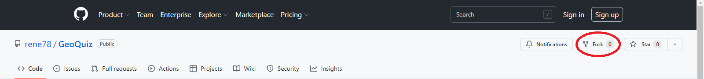

Add new region to the game
Below is the workflow to add a new region to the game
Workflow overview
- Fork repository
- Get or create GeoJSON file of the new region
- Add a property named en to the GeoJSON and name each region
- Optional: Simplify GeoJSON to decrease file size with
- Use the tool GeoQuiz File Preparator to create an optimized GeoJSON and name file
- Safe GeoJSON in /data folder named with 2-digit country code, e.g. jp.js
- Add region names to the end of locales/countryNames.js
- Add 2-digit country code to /data/regions.js
- Your new region should show up in the game
Step-by-step explanation
In this example we are adding the districts of Japan to the game.
Video
Check out this video if you don't like to read
Add video
-
Fork or download the GeoQuiz repository

- Open your text editor (e.g. VS Code) and open the forked GeoQuiz project
- ...